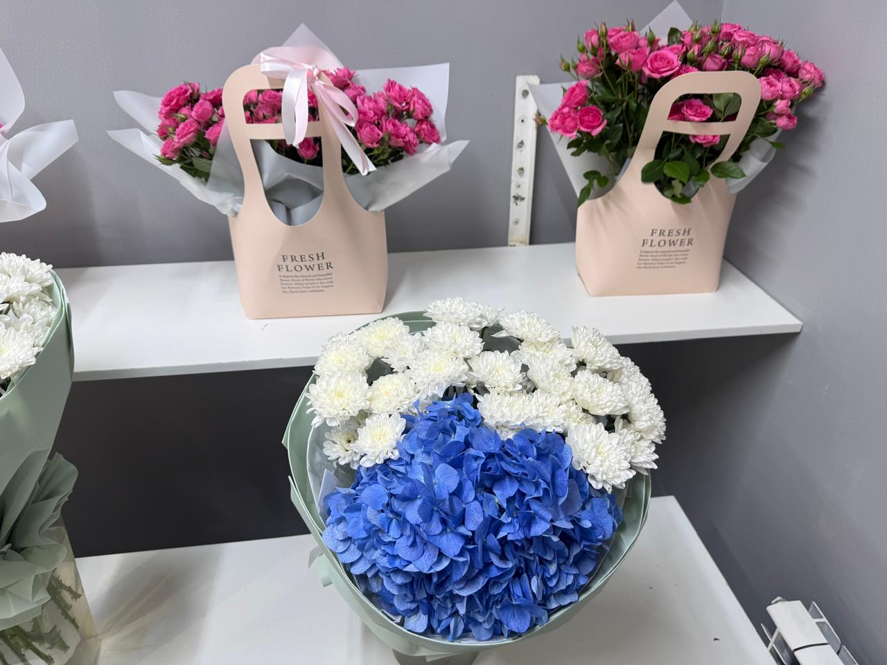

Каталог авторских букетов

Добро пожаловать в основной раздел нашего магазина Dielly Flowers. Мы гордимся тем, что предлагаем жителям Астаны только самые свежие и качественные цветы. Каждый наш букет — это не просто набор растений, это настоящее произведение искусства, созданное нашими флористами с любовью и вниманием к деталям. В нашем ассортименте вы найдете нежные кустовые розы, стойкие хризантемы, объемные гортензии и экзотические композиции, которые идеально подойдут для любого торжества, будь то свадьба, день рождения, юбилей или просто желание сделать приятное близкому человеку без особого повода. А в качестве сладкого дополнения у нас всегда в наличии свежие бенто-тортики.
«Мы собираем каждый букет так, чтобы он дарил эмоции, а не просто стоял в вазе. Радуйте своих близких чаще.»
— Сураншиев Баглан, владелец Dielly Flowers
Прайс-лист и состав наших композиций
| Название букета | Основной состав | Кому подойдет | Цена (KZT) |
|---|---|---|---|
| «Розовый комплимент» | Розовые кустовые розы, флористическая губка, фирменная сумочка-пакет FRESH FLOWER. | Идеально для свиданий и долгих прогулок, очень удобно носить в руке. | 10 000 |
| «Белоснежная классика» | Пышные белые хризантемы, полупрозрачная матовая упаковка, лента с принтом. | Универсальный и очень стойкий подарок, который будет радовать свежестью неделями. | 12 000 |
| «Лазурный контраст» | Крупная синяя гортензия, белые хризантемы, стильная многослойная упаковка. | Для любителей необычных сочетаний и ярких, объемных композиций. | 18 500 |
Обратите внимание, что состав букетов может незначительно меняться в зависимости от сезонности цветов. Пожалуйста, уточняйте наличие конкретных сортов у наших менеджеров перед оформлением заказа.